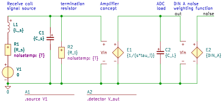

fumo
.source V1
.detector V_out
C1 1 0 C value={C_s} vinit=0
C2 out 0 C value={C_L} vinit=0
E1 out 0 1 0 E value={1/(s*tau_i)}
E2 noise 0 out 0 E value={DIN_A}
L1 1 2 L value={L_s} iinit=0
R1 2 3 R value={R_s} noisetemp={T} noiseflow=0 dcvar=0 dcvarlot=0
R2 1 0 R value={R_t} noisetemp={T} noiseflow=0 dcvar=0 dcvarlot=0
V1 3 0 V value=0 noise=0 dc=0 dcvar=0
.end
Go to fumo_index
SLiCAP: Symbolic Linear Circuit Analysis Program, Version 4.0.10 © 2009-2025 SLiCAP development team
For documentation, examples, support, updates and courses please visit: analog-electronics.tudelft.nl
Last project update: 2026-06-14 21:17:13